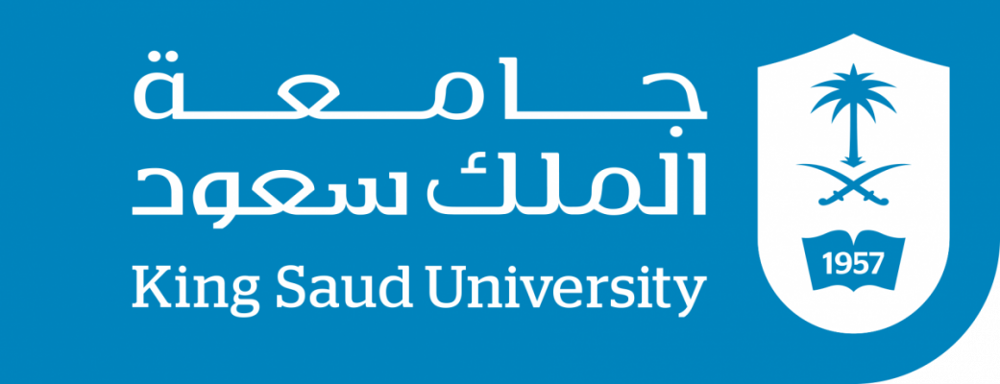
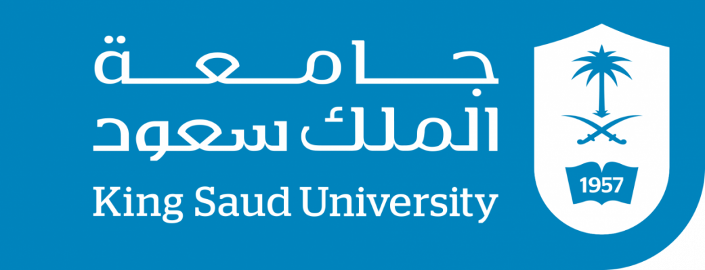

___
learn more
Apply innovative agri-technologies
Apply and promote innovative technology-enabled practices to deliver sustainable agriculture research for protected cultivation
Our Research Themes
Apply and promote innovative technology-enabled practices to deliver sustainable agriculture research for protected cultivation
Estidamah was launched in 2017 to perform applied research and seek innovative solutions for sustainable and resilient agriculture and food systems. The center focus on ensuring food security, enhancing sustainable Agri-environmental systems, developing measures for climate change mitigation and adaptations. It strives to adopt and test novel technologies for enhancing sustainable farming practices in a number of key areas, including increasing crop production per unit area, improving integrated water management in agriculture, by boosting water use efficiency and reducing impacts on freshwater resources.
Estidamah aims to put in place knowledge management, research collaboration and effective empowerment; to adapt and develop agricultural systems, to conduct research and applied experiments in areas of protected cultivation, Integrated Pest Management (IPM), biofertilization, integrated management of organic waste, Climate Smart Agriculture (CSA) and localization of modern cultivation technologies. The center tries to facilitate innovation which will support and develop sustainable agriculture and expand its applications
know more
At the heart of our research and studies, our past and current research works focus on the need to secure sustainable agricultural products for the people of Saudi Arabia. Practically, we deliver our impact by addressing various key challenges, including – but not limited to – scarce water resources and extreme climate conditions; through a widely open innovative culture and strategic partnership with the World’s leaders in protected cultivation, as well as promoting good agricultural practices throughout the Kingdom. Here, you can find more information on our research, works, projects and successes.
We are conducting applied research in sustainable agriculture to promote collaboration, technology, and knowledge transfer in the areas of horticulture.


.png)
.png)
We have interested horticulture result that we want to share with you, join us on on of the following
vew all
 
